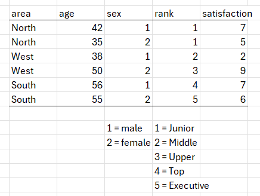

library(tidyverse)
library(dplyr)
library(gt)3 Vectors and data frames
3.1 Vector
In R a vector is a collection of elements that are all of the same type. A typical data set consists of a number of rows that each represents a case, and a number of columns. Each of the columns is a vector.
We can create a vector in R by concatenating the elements. We do this by typing the elements inside round brackets. Each element should be separated by a comma.String or character elements should be enclosed in quotation marks. Finally, we place a c before the round brackets.
For instance, say we have the following elements, 10, 8, 12, 15. We can combine them into a vector as follows: c(10, 8, 12, 15). Similarly, we can combine the elements Dutch, Mandarin, Swahili and Russian into a vector as follows: c(“Dutch”, “Mandarin”, “Swahili”, “Russian”).
3.2 A data frame consists of vectors
Consider the following mini data set. There are four rows, each of which contains data of a particular person. There are five columns, each of which represents a variable. Note that each of the columns is a vector. The first column (name) vector is a character vector, the second (sex) is also a character vector, the third (division) is a numeric vector, the fourth (graduate) is a logical vector, and the fifth (experience) is a numeric vector.
| name | sex | division | graduate | experience |
|---|---|---|---|---|
| Peter | male | 1 | TRUE | 1 |
| Paul | male | 2 | FALSE | 3 |
| Mary | female | 2 | TRUE | 6 |
| Janette | female | 3 | TRUE | 8 |
We would typically create such a data set in software such as Excel, and then import the data into R. It is informative, however, to create such a data set in R as an excercise. In the paragraphs that follow we do that by first creating five vectors (each with four elements) and then concatenating (combining) the vectors into a data frame.
3.3 Creating a data frame in R
3.4 Character vectors
First, we create character vectors for name and sex.
c("Peter", "Paul", "Mary", "Janette") [1] "Peter" "Paul" "Mary" "Janette"c("male", "male", "female", "female")[1] "male" "male" "female" "female"3.5 Logical vectors
Second, we create a logical vector for the graduate variable. Note that we do not enclose TRUE and FALSE with quotation marks.
c(TRUE, FALSE, TRUE, TRUE)[1] TRUE FALSE TRUE TRUE3.6 Numeric vectors
Third, we create numeric vectors for the division and experience variables. Note that the numbers in our two numeric vectors serve different purposes. The numbers in the experience vector represents differences in quantity (i.e. differences in years experience). By contrast, however, the numbers in the division column indicates differences in type or quality. For instance, in the division vector the numbers 1, 2 and 3 are used to indicate the divisions (finance, HR or marketing) in which Peter, Paul, Mary and Janette work.
## Experience
c(1,3,6,8)[1] 1 3 6 8## Division
c(1, 2, 2, 3)[1] 1 2 2 33.7 Storing vectors as objects
We can store a vector for further use by assigning it to an “object” that we give any name of our choosing. We can then use that name to access the vector. Below we assign the character vector with the names of the four participants to an object that we call “name”, the character vector containing information about the sex of the participants to an object we call “sex”, the numeric vector containing information about years experience to an object we call “experience”, the numeric vector containing information about the division in which a person works as an object we call “division”, and the logical vector containing information about graduate status as an object we call “graduate”.
We can access the contents of any object by typing its name and then running it.
name <- c("Peter", "Paul", "Mary", "Janette")
sex <- c("male", "male", "female", "female")
graduate <- c(TRUE, FALSE, TRUE, TRUE)
experience <- c(1, 3, 6, 8)
division <- c(1, 2, 2, 3)3.8 Combining vectors into a data frame
We can combine vectors into a data frame, on condition that the vectors are of the same length. The order in which we type the names of the vectors determines their positions in the data frame. Each of the vectors becomes a column in the data frame.
Below we combine our five vectors into a data frame that we call df (note that we could choose any name we want).
df <- data.frame(name, sex, division, graduate, experience)
df name sex division graduate experience
1 Peter male 1 TRUE 1
2 Paul male 2 FALSE 3
3 Mary female 2 TRUE 6
4 Janette female 3 TRUE 8str(df)'data.frame': 4 obs. of 5 variables:
$ name : chr "Peter" "Paul" "Mary" "Janette"
$ sex : chr "male" "male" "female" "female"
$ division : num 1 2 2 3
$ graduate : logi TRUE FALSE TRUE TRUE
$ experience: num 1 3 6 83.9 Changing a character or numeric vector to a factor
The sex variable is stored as a character vector, whereas the division variable is stored as a numeric vector. Both of these variables indicate membership to different levels of a categorical variable. For instance, the words “male” and “female” are different levels of the categorical variable “sex”. Similarly, the numbers 1, 2 and 3 are used to indicate different levels, i.e. “finance”, “HR”, and “marketing” of the categorical variable “division”. We need to instruct R to treat the sex and division variables as categorical variables. In R, a categorical variables is referred to as a factor.
In the example below we use the factor() function to instruct R to treat the sex and division variables as factors. Note how we use the $ symbol to gain access to a vector in a data frame.
library(tidyverse)
df$sex <- factor(df$sex)
df$division <- factor(df$division,
levels = c(1, 2, 3),
labels = c("Finance",
"HR",
"Marketing"))
str(df)'data.frame': 4 obs. of 5 variables:
$ name : chr "Peter" "Paul" "Mary" "Janette"
$ sex : Factor w/ 2 levels "female","male": 2 2 1 1
$ division : Factor w/ 3 levels "Finance","HR",..: 1 2 2 3
$ graduate : logi TRUE FALSE TRUE TRUE
$ experience: num 1 3 6 8We use the str() function to inspect the structure of the data frame. The division variable now is a factor and no longer a numeric vector.
df %>% gt()| name | sex | division | graduate | experience |
|---|---|---|---|---|
| Peter | male | Finance | TRUE | 1 |
| Paul | male | HR | FALSE | 3 |
| Mary | female | HR | TRUE | 6 |
| Janette | female | Marketing | TRUE | 8 |
3.10 Exercise
Consider the data set below. Recreate this data set in R by first creating five separate vectors and then store it as a data frame with the name mydata. Be sure to instruct R to treat area, sex and rank as factors. Give appropriate labels to the levels of the sex and rank variables. Finally, use the str() function to inspect the structure of the data frame.
